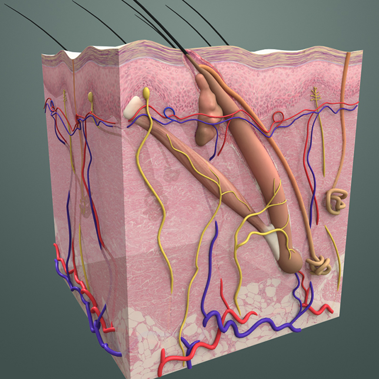

Human Anatomy
For this project, I produced educational videos for fresh medical students. We produced over 3 hours of video focusing on human anatomy. The videos explain the function, location, and relations of body parts and organs. Precision was key. Every part had to precisely represent the actual counter-part. To achieve this, we worked with medical doctors who checked the content for accuracy.
My role was planning and producing the videos. I worked with other 3d modelers and animators. We had to work on a flexible schedule, which meant that at times I had to do all the work on my own as team members were working on other projects.

Several challenges had to be tackled in this project. A good understanding of human anatomy and of the details of the subject of the video had to be achieved. Then laying out the plan and the storyboard, keeping in mind the pacing and clarity of the presentation.
Rigging and skinning were particularly interesting, because of the complexity of interaction between certain bones in the body.
Rigging and skinning were particularly interesting, because of the complexity of interaction between certain bones in the body.
I used 3ds Max for all the 3d work, and After Effects for compositing/motion graphics.